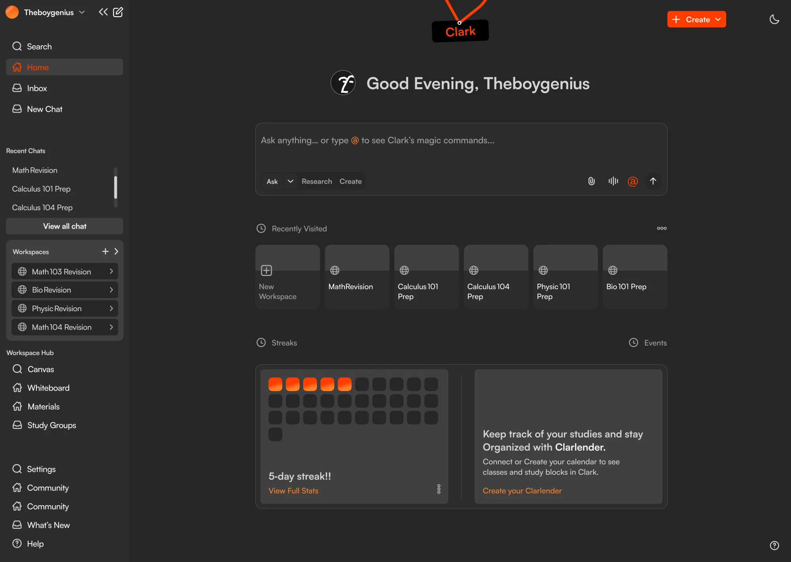

- tag −2.4°
- swing 0°/s
- cords taut, taut
- damping 0.9975/step
Case study / 009
Designing Clark: a study workspace that knows what you're studying
An AI-native study workspace, built by students for students. A student brings their materials in once, and chat, flashcards, quizzes, a shared board and a daily streak all work from them.
01
Intro
Clark puts a student's notes, slides and PDFs in one workspace and lets the AI work from them. From that one place they can ask questions about their own material, turn it into flashcards and quizzes, study on a shared board, and keep a streak going.
The problem it answers fits in two sentences:
Students now use 7 different apps to study. None of them talk to each other.
Three things go wrong with the way students study now:
- Fragmentation
Students switch between 5 to 7 apps. Context is lost, and the AI isn't aware of what they're studying. Years of notes sit in Drive, Notion and the downloads folder, and no study tool connects to any of it.
- Passive learning
Most study tools deliver content. Almost none test whether students actually understood it, or adapt when they didn't.
- Isolation
Students learn better together, yet every study tool is built for one person.
The badge. The tag hanging at the top of this page is Clark's logo, built as a small physics model. Section 08 takes it apart.
02
Context comes from your workspace
Clark's line was "Not a chatbot. Not a note-taking app. Not a flashcard tool. All three, connected." The connection is the product. You bring your materials into a workspace once, and the AI works from them, not from whatever you managed to paste into a prompt.
It works in three steps: connect and upload your materials, Clark understands your context, then you study actively. When you ask a question, you choose which materials it answers from.
So the home screen is one input with your work around it: the workspaces you were in last, the streak, the calendar, and a sidebar of chats and workspaces that folds away.

- The badge, hanging from the top edge of the screen.
- The composer. “Ask anything… or type @ to see Clark's magic commands…” (Fig. 3)
- Recently visited workspaces, as two-tone tiles, with New Workspace first.
- The streak card. “5-day streak!!” (Fig. 8)
- Clarlender, the calendar: “Keep track of your studies and stay Organized with Clarlender.”
- The sidebar: search, inbox, recent chats, workspaces and the Workspace Hub. It collapses.
- Create: Workspace, Chat, Flashcard, Canvas or Material.
- Light and dark, one tap.
03
The composer answers with objects
The input box does more than take questions. A switch under it sets the mode: Ask, Research or Create. Type @ and Clark offers its magic commands, and the one you pick lands in your sentence as an orange chip: @ask, @update, @materials, @board, @track, @quiz, @flashcard.
Results come back as objects, not paragraphs. Ask for flashcards and the chat hands you a card that says the pack is ready, with a button to open it. Ask for a quiz and a panel beside the chat builds one, then gives you its card: the topic, the source file, the date, “Score - Not taken yet.” and Start Quiz. Every reply carries the same row of actions: read aloud, copy, thumbs up, thumbs down, edit, regenerate.
Switch the mode to Create and a menu opens over the input with the 5 things you can start from scratch: a workspace, a chat, a flashcard set, a canvas or a material.
- mode Ask
- command @flashcard
- returns Flashcard Pack Generated
The placeholder teaches. Every empty composer in Clark says the same thing: “Ask anything… or type @ to see Clark's magic commands…”, with the @ in orange.
04
Onboarding: one command per step
Commands are powerful and invisible, which is a bad combination for a new user. So onboarding is 5 steps, and each one teaches exactly one command.
The card is split. On the left: a headline, a short paragraph, 3 benefits, a tip that says “Type @command”, and an orange Continue. On the right: the preview, with Prev and Next above it and a pager from 1 to 5, the current step in orange.
The card changes colour as you go. Steps 1, 2 and 5 are dark with a light preview; steps 3 and 4 turn it round, light with a dark preview.
Talk to your materials. Get instant clarity.
05
A card that turns over
@flashcard turns your material into a set, and the chat hands you a card: Flashcard Pack Generated, Open Flashcards. The set opens in a panel beside the conversation.
One card at a time. The word Click sits in the corner, and clicking turns the card over. Under it, a counter and a label, “1/6 Show Back”, between two arrows. Below that, Preview Set (6 Cards) opens the whole list, and Delete Set clears it. A tip at the bottom points at the next move: just type @quiz.
The designs are still frames, so the motion here is mine. A flip is a half turn, and the card shows its other face at 90°, the moment it's edge-on. The curve decides when that moment comes. On the ease-out used here the new face arrives 73 ms into a 560 ms turn, and the rest is the card settling while you read it. On a linear turn you wait 280 ms for it.
You can also generate a quiz based on this set, just type @quiz or generate another Flashcard set using @flashcard
- rotateY 0°
- t 0/560 ms
- face swaps at 0 ms
cubic-bezier(0.22, 1, 0.36, 1)
06
What empty looks like
Everything you make in Clark becomes a card, and the cards answer the same questions: where it came from, when, and how you did. Workspaces are tab-shaped folders with a star to pin them and a count of the files inside. Quizzes list their source, their date and your score, with open, edit, share and delete down the right.
Empty screens got as much attention as full ones, because a new user sees them first. They talk like a person: “Looks a little quiet in here…”, “Nothing to answer here… yet”. Each one explains the feature, shows a ghost of the card that will fill it, and ends with the one button that does.
07
The streak
The streak card sits on the home screen. It's a grid of 31 rounded squares, about a month. Days you studied fill orange; the rest stay charcoal. The label is excited on purpose, “5-day streak!!”, with View Full Stats in orange under it.
Before you've started, it doesn't show an empty grid and a zero. It says “No streak yet. Study today to ignite your first flame!” On the landing page the same card turns light, lays the 31 days out 7 to a row, and reads “05 Days In! Halfway to 10! Stay consistent!”
A streak only counts days in a row. In this rebuild it counts back from the latest day you studied and stops at the first gap, so a day studied before the gap stays orange but no longer counts.
5-day streak!!
View Full Stats
⚡05 Days In!
Halfway to 10! Stay consistent! 💪
Two voices, one number. The app says “5-day streak!!”. The landing page pads the same 5 to 05 and holds it up against 10. Here the “Halfway” line shows only when you are exactly halfway to the next 10.
08
The badge
The brand is a student ID on a lanyard: the Clark wordmark in orange on a black tag, tilted, hanging from an orange cord. The idea carries into every surface: section titles become small tags with a punch hole. Orange #ff3d00 on charcoal #262626, with a fine dot grid behind.
On this page the badge is a small physics model. The tag is 5 points held rigid: 4 corners and the punch hole. Each cord is a line from a fixed point above to the hole that can go slack but can't stretch, so the hole can only be where both cords reach. Gravity pulls, a little damping takes energy out every step, and the hole sits just off centre so the tag rests tilted, as drawn.
- tag −2.4°
- swing 0°/s
- cords taut, taut
- period not yet
- each swing keeps not yet
And the name earns a joke, which we used:
09
Conclusion
Clark's design comes down to one decision: the workspace is the context. Because of it, a student types one line and gets an answer from their own files, a flashcard set or a quiz they can start right away. A new student learns the commands in 5 steps, an empty screen always shows the one button that fills it, and the streak gives them a reason to come back tomorrow. Something that powerful ends up with almost nothing to learn.